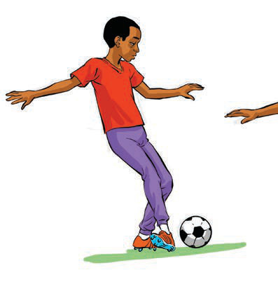
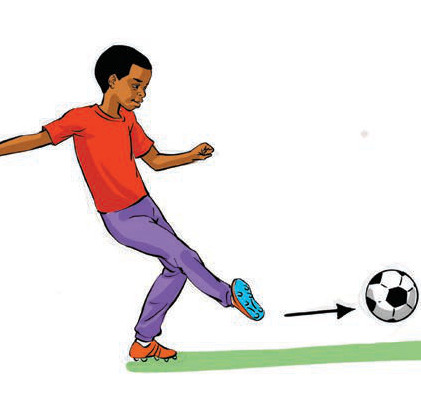

Miongoni mwa stadi muhimu katika mpira wa miguu ni kama vile kutoa pasi, kupokea mpira, kukokota mpira, kupiga shuti na kukaba.
(a) Kutoa pasi
Kutoa pasi ni kupiga mpira kwenda kwa mchezaji mwenzako kwa usahihi. Hii ni stadi ya msingi ya kubadilishana mpira kwa wachezaji wa timu moja ili kuongeza nafasi za kushambulia au kujilinda. Kutoa pasi kwa usahihi ni muhimu ili timu iweze kufanya mashambulizi ya haraka na kupunguza nafasi za mpinzani kuteka mpira. Wachezaji wanatakiwa kujua wakati na umbali unaohitajika kwa kila pasi, na pia kuwa na mawasiliano bora ili kupunguza makosa. Kuna aina kuu mbili za pasi ambazo ni pasi fupi na pasi ndefu.
Pasi fupi
Pasi fupi ni kupiga mpira kwenda kwa mchezaji mwenzako ambaye yupo katika umbali mdogo. Pasi hii hupigwa kwa sehemu ya ndani ya mguu, kama inavyoonekana katika Kielelezo namba 2.


Kielelezo namba 2: Kutoa pasi fupi